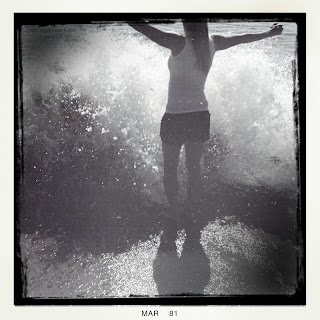

Recovered weblog entry
Impact

Probably the best shot of the day. I wasn't prepared for this to happen; the wave snuck up on us both and smacked right into her. I managed to hit the button before I ran. It was a miracle my phone didn't end up in the ocean today. Lens: Bettie XL
Film: BlacKeys B+W